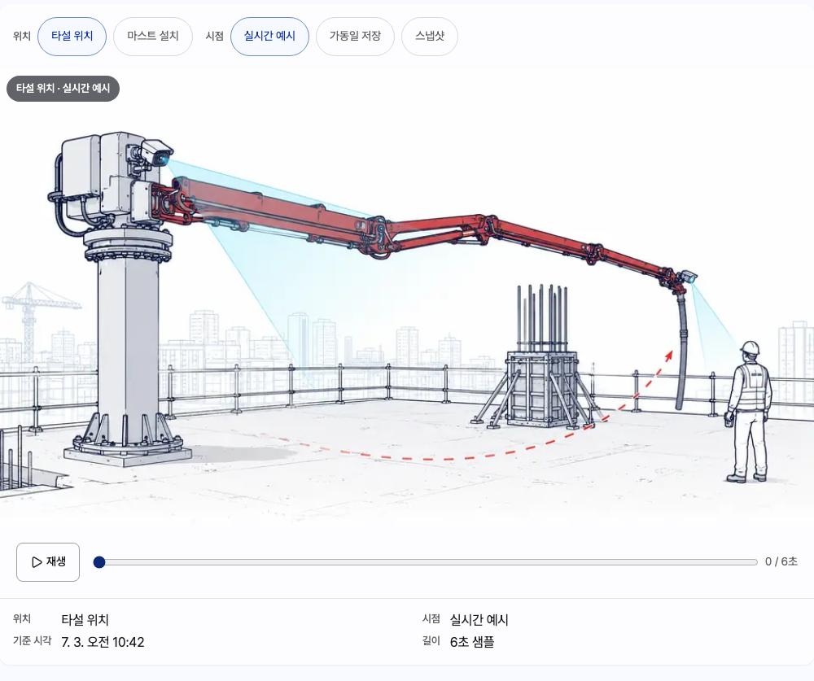
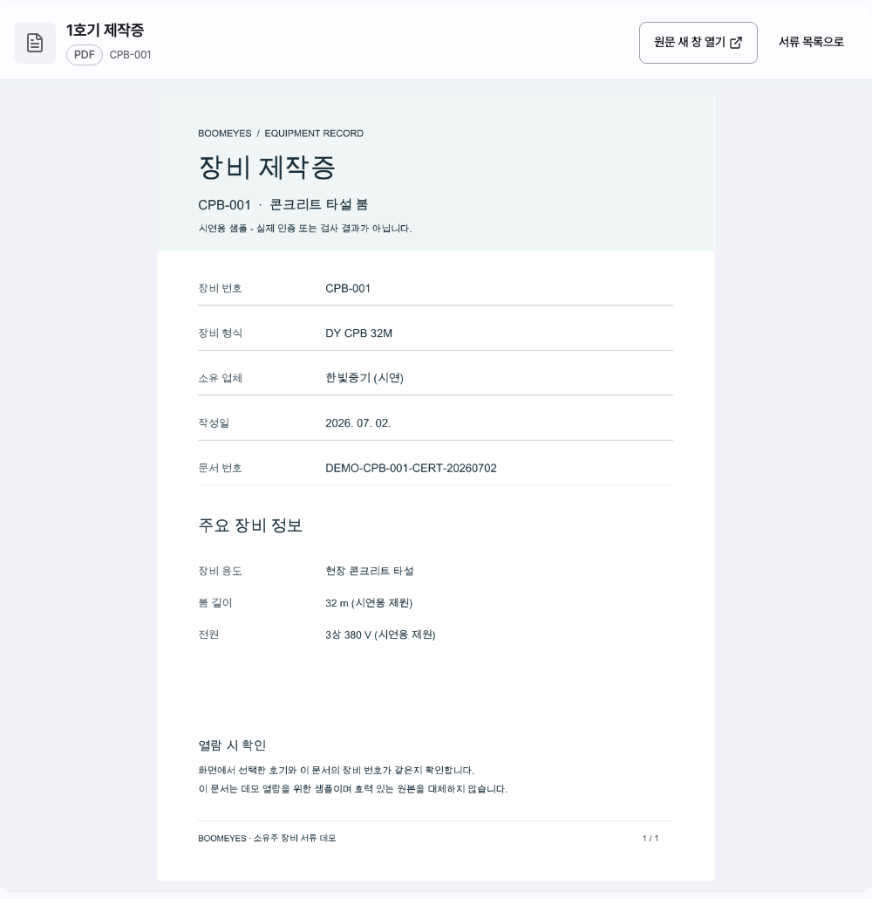
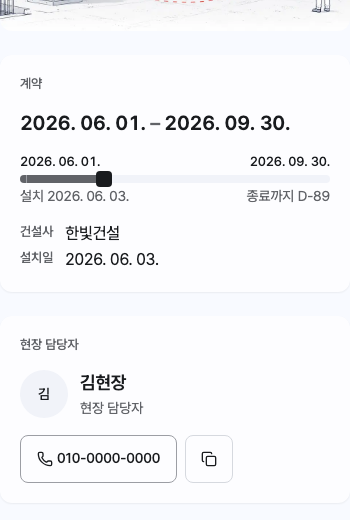
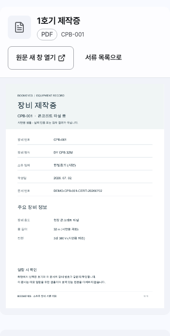

01 / 소유주 데모
내 장비를 어떻게 관리하나요?
아이디와 비밀번호로 로그인합니다.
시연에서는 데모 계정으로 로그인을 눌러 소유주 계정으로 들어갑니다.
다음 화면: 운영 현황
02 / 운영 현황
어느 현장과 장비부터 확인할까요?
운영 구성과 우선 확인할 장비를 살펴봅니다.
현장 투입과 보관 대수를 구분하고, 확인할 장비 목록에서 다음 행동을 선택합니다. 보관 중이라는 표시만으로 투입 가능 여부를 판단하지 않습니다.
다음 화면: 보유 장비
03 / 보유 장비
찾는 호기가 어디에 있나요?
호기 또는 현장명으로 검색하고 장비를 선택합니다.
이상이 있는 장비뿐 아니라 정상 장비와 보관 장비도 같은 목록에서 찾습니다. 검색 결과 수와 선택한 장비의 현장을 함께 확인합니다.
다음 화면: 호기 상세
04 / 호기 상세
계약과 현장 담당자는 누구인가요?
계약 기간, 현장 담당자, 마지막 수신 시각을 확인합니다.
선택한 호기를 기준으로 계약과 연락처를 확인합니다. 수신이 지연된 값은 현재 상태와 구분해서 읽고, 필요한 서류나 영상으로 이동합니다.
다음 화면: 영상
05 / 영상
타설·설치 상황과 저장 영상을 볼 수 있나요?
타설 위치와 마스트 설치를 선택하고 가동일 저장을 재생합니다.
영상의 용도와 시점을 따로 선택합니다. 화면의 시연 표시는 6초 샘플임을 뜻하며, 저장 영상은 끝에서 멈춥니다.
다음 화면: 장비 서류
06 / 장비 서류
필요한 제작증과 검사 성적서를 열 수 있나요?
선택한 호기의 제작증과 검사 성적서 원문을 엽니다.
문서 안의 장비 번호와 화면의 호기가 같은지 확인합니다. 시연 파일은 내용을 미리 본 뒤 첨부하며, 새로고침하거나 로그아웃하면 초기화됩니다.
다음 화면: 이상·점검
07 / 이상·점검
어떤 장비에 연락과 점검이 필요한가요?
알림의 대상 호기를 확인한 뒤 장비 상세에서 연락 정보를 봅니다.
알림을 읽었다는 표시와 장비 문제가 해소됐다는 판단을 구분합니다. 대상 장비와 현장 연락처를 확인하는 흐름을 마칩니다.
다음 화면: 보유 장비
영상의 재생과 시간 조작
같은 호기의 실제 화면 확대

1호기 제작증 원문
같은 호기의 실제 화면 확대

휴대폰에서 계약과 현장 담당자 확인
같은 호기의 실제 화면 확대

휴대폰에서 제작증 원문 열람
같은 호기의 실제 화면 확대

시연 조건
- 이 문서는 내부 검토용 초안입니다. 고객 확인은 아직 진행하지 않았습니다.
- 장비·계약·연락처와 원문 서류는 시연용 예시입니다. 실제 인증이나 검사 결과를 대체하지 않습니다.
- 보관 중인 장비가 즉시 투입 가능한 장비를 뜻하지는 않습니다.
- 수신 지연·미연동·단말기 미장착은 구분하며, 과거 측정값에는 마지막 수신 시각을 표시합니다.
- 영상은 실제 현장 스트림이 아닌 6초 샘플입니다. 저장 정책과 실제 장비 연동은 별도 확인 대상입니다.
- 시연용 첨부는 현재 브라우저 메모리에만 남습니다. 새로고침·로그아웃 시 초기화되고 오프라인에서는 첨부하지 않습니다.
부록 · 원문 근거와 빌드 기록
2026-09-08 V5 · 관제기능 시트
| 화면 | 원문 셀 | 검토 코드 (PC / 폰) |
|---|---|---|
| 소유주 데모 | M39, H39:H40 | B0-01 / A4-01 |
| 운영 현황 | H70, H76 | B1-02 / A4-07 |
| 보유 장비 | I9:N25, H71, H77 | B1-09 / A4-02 |
| 호기 상세 | H60:H68, H71, H77 | B1-10 / A4-08 |
| 영상 | H47:H55, H72:H73, H78:H79 | B1-11 / A4-09 |
| 장비 서류 | H36, H74, H80 | B1-05 / A4-10 |
| 이상·점검 | H37:H38, H60:H68 | B1-12 / A4-11 |
전체 자동 캡처 112 / 112. 고객 확인은 아직 진행하지 않았습니다.
소스 커밋 d0f93c6144157b19e50d58bb3c69dd3f65e2322c
작업 내용 해시 e3b0c44298fc1c149afbf4c8996fb92427ae41e4649b934ca495991b7852b855
원천 해시 5f7afd017b41ae6d9a31f98db3537817bb10a4b465dfb119cc9544a9cdd09c87